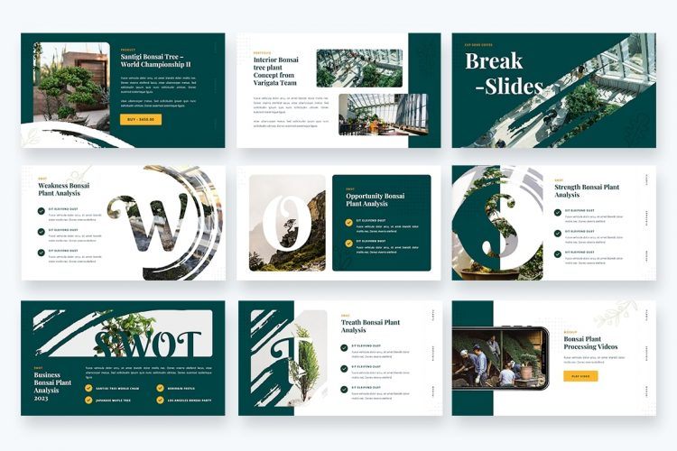
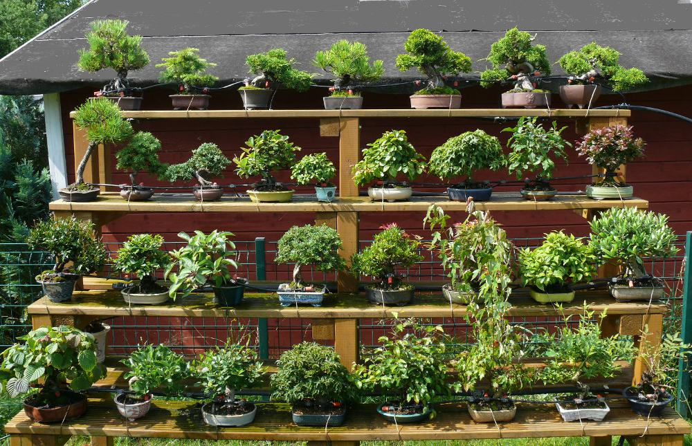

The relationship between technology and nature has always been complex, with considerable overlap
between the two. While nature continues to be an inspiration for new technologies and ways of thinking,
advancements in technology have made it possible
for us to better comprehend and influence the natural world. Our impact on the environment has increased
along with our technological advancements. To achieve a balance between the two, it is crucial to
understand both the advantages and
disadvantages of technology.
Figure - Technology and Nature
Relation between technology and Bonsai
In recent years, the world of bonsai has come a long way, and technology has played a crucial role in
its progress. Technology has had a favorable impact on the bonsai industry as a whole, from the way trees
are grown and groomed
to the way they are sold and marketed. This enables better and more efficient order processing, resulting in
a more productive and successful business. The way bonsai e-businesses conduct business has been
significantly impacted by technology,
which has both benefits and drawbacks. Technology has created a wide variety of opportunities for bonsai
e-business sellers to reach clients and sell their products, from online marketplaces to social media, but
it has also introduced
new obstacles, such as increasing competition and the growth of counterfeit products.
Positive impacts of technology on bonsai
e-business
The way bonsai businesses are planned has been
significantly impacted by technology, which has
greatly improved the accessibility of buying and selling bonsai plants and other related tools. Bonsai art
lovers can now readily purchase
bonsai plants, equipment, and other related things from the comfort of their own homes thanks to the
internet. Bonsai lovers can even quickly access tools and information on the topic, including care
guidelines, styling tutorials, and
discussion groups where they can connect with like-minded individuals who are also interested in bonsai.
Forums and groups have also made it easier for enthusiasts to connect with other specialists, which can help
the bonsai community
expand and improve.
The development of online markets and platforms like Amazon and eBay has made it possible for
bonsai firms to reach a global audience, while Daraz has aided in reaching a national audience. These online
marketplaces provide clients
with many payment methods while also offering a secure and convenient method for financial transactions to
take place. Furthermore, many bonsai businesses, including ours, have websites that may be introduced to
sell products as well as
deliver bonsai knowledge and resources. This has significantly increased the reach of bonsai e-commerce
businesses and allowed them to reach a significantly larger brand awareness. Technology also enables bonsai
e-businesses to enhance
their supply chain and inventory control. Online systems have also aided small e-businesses in inventory
management, order processing, and shipping, as well as providing analytics into the business performance
which makes the business
much more effective and optimized. This frees up sellers' time to concentrate on other aspects of their
business and increases overall success.

Figure - Various e-businesses Networking sites such as Instagram, Facebook, and Twitter enable e-businesses to communicate with
customers, share product information and images, and even deliver customized recommendations and guides. It
also allows customer engagement,
which can aid in the relationship building between business owners and customers. These platforms have also
contributed to the popularization of art by enabling bonsai enthusiasts to share beautiful photos and videos
of their creative
works and gather insights from others.
How texhnology has impacted the art of
bonsai
itself
The application of smart technology to bonsai maintenance is another way that technology has
impacted
the art form. Nowadays some sensors and apps can measure humidity, temperature, and light levels in
a bonsai
setting, which can
be utilized to optimize the tree's developing conditions. There are also automatic watering systems
that can
be operated by smartphones that can be programmed to water the bonsai tree at certain intervals and
amounts.

Figure - Automated Watering System
Negative impact of technology on bonsai
e-businesses
Technology has benefited bonsai e-businesses greatly, but it has also had certain unfavorable
effects.
It has created new obstacles for enterprises in the bonsai sector, ranging from increasing
competitiveness
to the growth of counterfeit
or fake items, erosion of human touch and customer service, and over-reliance on automation.
Increased competition is one of the most significant negative effects on bonsai
e-businesses.
Although businesses can access a worldwide audience and sell their products much more easily, this
implies
that more enterprises are
competing for customers' attention and investments. Because of the increased competition, it can be
tough
for businesses to stand out and attract clients.
The internet's accessibility to knowledge and resources has made it simpler for scammers to
create
and market fake bonsai trees, and other related goods. This is extremely destructive to businesses
since it
undermines trust in
their real products. Personal touch in bonsai e-businesses has also been eroded by technology.
Customers may
feel like they are merely a number and not feel respected as individuals. This can result in a loss
of
loyalty and trust in the
company.
Figure - Scamming Businesses The over-reliance on automation and algorithms is another harmful influence of technology on
bonsai
e-businesses. While automating inventory management can be beneficial, it can also lead to a loss of
human
engagement and personalization.
This might make it more difficult for business owners to develop relationships with their clients
and for
them to find items that are suited for them. The internet has made it simple to learn about bonsai
care,
styling, and history. However,
the sheer amount of information available on the internet can be intimidating and contradictory.
This can
lead to misinformation and confusion, which can harm the quality of bonsai care and the bonsai
community as
a whole.
Conclusion
Ultimately, technology has had a significant impact on the art of bonsai and bonsai
e-businesses,
from making knowledge and resources more accessible to promoting new tools and techniques for
styling and
caring for bonsai plants.
It has simplified businesses' ability to reach a worldwide audience, engage with consumers, and
manage their
operations. It has also benefited the art of bonsai by making it more accessible and efficient.
Technology
has made the process
of buying and selling bonsai goods more convenient, efficient, and accessible, from online
marketplaces and
social media to warehousing and transportation and management, and virtual reality. Regardless of
these
negative consequences,
it is critical to remember that technology and nature are not contradictory. Businesses in the
bonsai sector
must be aware of these issues and take measures to mitigate their harmful consequences. We can
continue to
benefit from technology's
numerous benefits while simultaneously sustaining and preserving the natural environment.
Ultimately, the
decisions that will determine how technology and nature engage in the years to come must be made by
each of
us as individuals and
as a society.